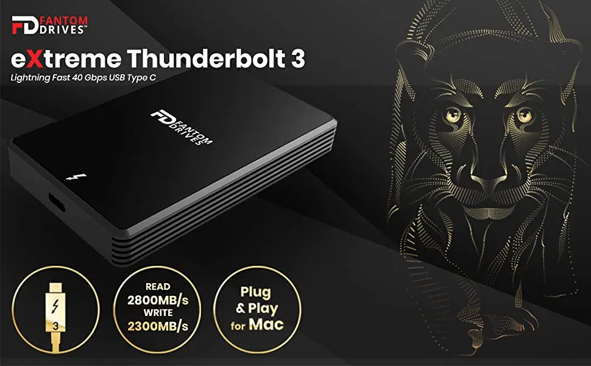
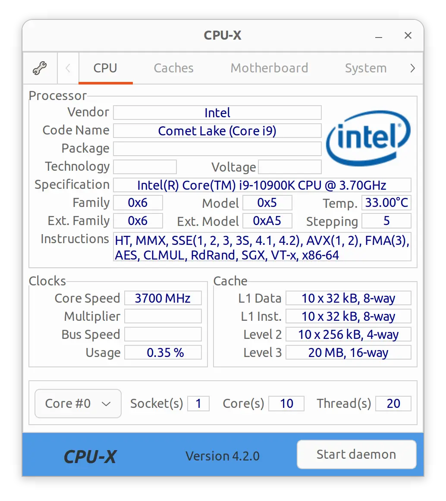
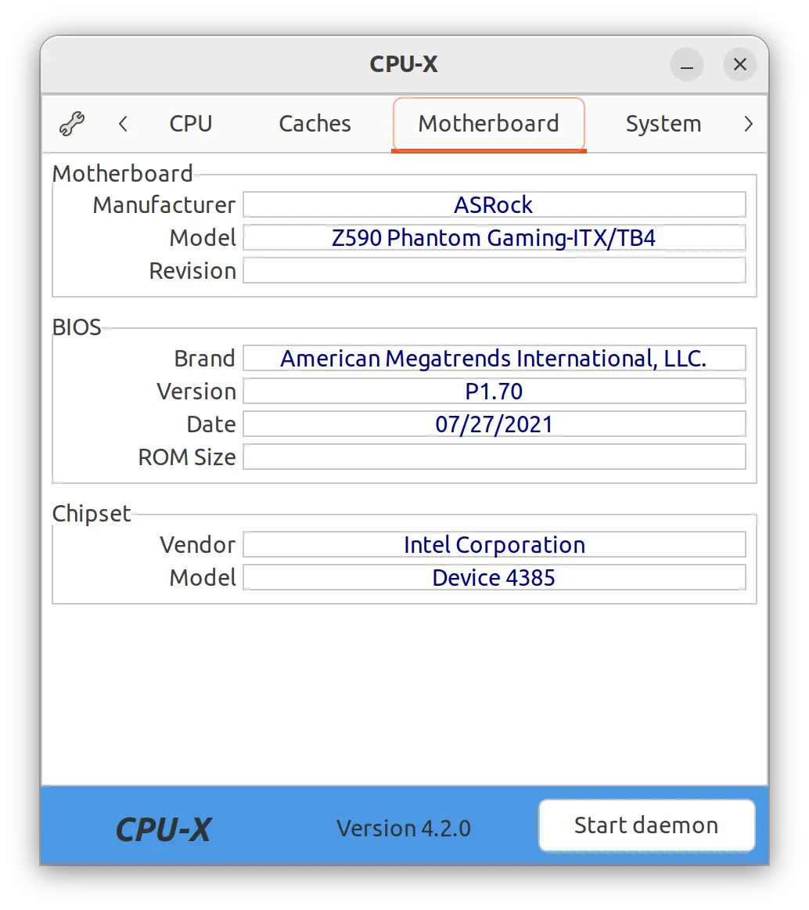
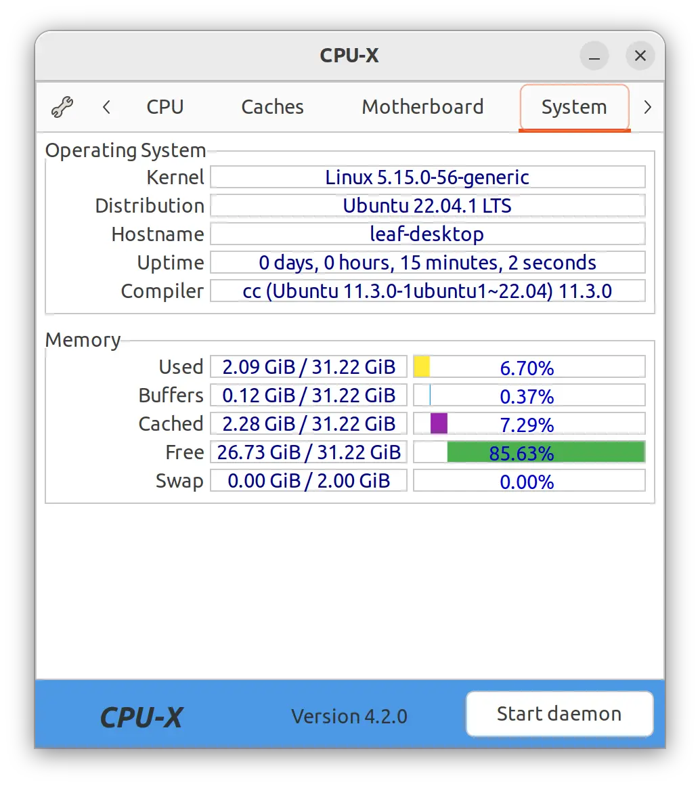

I love to have Linux as my main OS. For someone who spends most of his time programming, writing HTML, writing LaTeX, and browsing the net, it is nearly a perfect tool. Packages are one "apt install" away. Mounting my website is one sshfs away and with private key authentication I don't even have to type my password. Sublime Text and the Jetbrains IDE suite work like a charm. I could go on and on.
Yet, occasionally, my system malfunctions to a point it requires a significant effort to fix it. Really bad occurrences result in disheartening hours googling in the hope that someone more qualified ran into the same issue. The latest episode involved a Fantom 2TB eXtreme Thunderbolt 3 External SSD.
I have vouched to avoid USB and its undecipherable specs. Therefore, when I can, I go Thunderbolt. For backup purposes I got a Fantom 2TB eXtreme Thunderbolt 3 External SSD.
There goes my evening....
When I connect the drive with a Thunderbolt cable, the OS detects it. But nothing gets mounted. It does not show in Disk application either. I can't even mount it using the UUID. Like a Schrödinger SSD, it is there but it is not.
$ boltctl
● Micronet Technology Fantom Drives eXtreme
├─ type: peripheral
├─ name: Fantom Drives eXtreme
├─ vendor: Micronet Technology
├─ uuid: 00ca782d-dcfa-3e02-ffff-ffffffffffff
├─ generation: Thunderbolt 3
├─ status: authorized
│ ├─ domain: 0deb8780-00cc-9858-ffff-ffffffffffff
│ ├─ rx speed: 40 Gb/s = 2 lanes * 20 Gb/s
│ ├─ tx speed: 40 Gb/s = 2 lanes * 20 Gb/s
│ └─ authflags: none
├─ authorized: Fri 16 Dec 2022 08:18:22 AM UTC
├─ connected: Fri 16 Dec 2022 08:18:22 AM UTC
└─ stored: Thu 15 Dec 2022 07:02:21 AM UTC
├─ policy: iommu
└─ key: no
I gather the specs of my machine. I can't remember what motherboard I used to build the DA2. neofetch won't tell me but CPU-X does.
  I google variations of "z590 TB3 SSD not working" for a while, even going down to page three as my despair deepens, and find nothing relevant. A kind soul on Twitter reminds me of dmesg outputs. I notice a red line which may be related.
$ sudo dmesg [ 45.573575] pcieport 0000:04:01.0: pciehp: Slot(1): Card present [ 45.573584] pcieport 0000:04:01.0: pciehp: Slot(1): Link Up [ 45.709870] pci 0000:06:00.0: [8086:15da] type 01 class 0x060400 [ 45.709964] pci 0000:06:00.0: enabling Extended Tags [ 45.710179] pci 0000:06:00.0: supports D1 D2 [ 45.710180] pci 0000:06:00.0: PME# supported from D0 D1 D2 D3hot D3cold [ 45.710343] pci 0000:06:00.0: 8.000 Gb/s available PCIe bandwidth, limited by 2.5 GT/s PCIe x4 link at 0000:04:01.0 (capable of 31.504 Gb/s with 8.0 GT/s PCIe x4 link) [ 45.721928] pci 0000:06:00.0: No bus number available for hot-added bridge [ 45.721931] pcieport 0000:04:01.0: bridge window [mem 0x00100000-0x000fffff 64bit pref] to [bus 06] add_size 200000 add_align 100000 [ 45.721934] pcieport 0000:04:01.0: bridge window [mem 0x00100000-0x000fffff] to [bus 06] add_size 200000 add_align 100000 [ 45.721936] pcieport 0000:04:01.0: BAR 14: no space for [mem size 0x00200000] [ 45.721938] pcieport 0000:04:01.0: BAR 14: failed to assign [mem size 0x00200000] [ 45.721939] pcieport 0000:04:01.0: BAR 15: no space for [mem size 0x00200000 64bit pref] [ 45.721940] pcieport 0000:04:01.0: BAR 15: failed to assign [mem size 0x00200000 64bit pref] [ 45.721941] pcieport 0000:04:01.0: BAR 14: no space for [mem size 0x00200000] [ 45.721941] pcieport 0000:04:01.0: BAR 14: failed to assign [mem size 0x00200000] [ 45.721942] pcieport 0000:04:01.0: BAR 15: no space for [mem size 0x00200000 64bit pref] [ 45.721943] pcieport 0000:04:01.0: BAR 15: failed to assign [mem size 0x00200000 64bit pref] [ 45.721944] pcieport 0000:04:01.0: PCI bridge to [bus 06] [ 45.721956] pcieport 0000:04:01.0: bridge window [io 0x6000-0x6fff]
I google it and end up here. I don't understand any of the described solution. It looks like the kernel needs a parameter to set the bus size for a pci channel. After several hours in, I'll try anything.
# vi /etc/default/grub
// add "pci=realloc,assign-busses,hpbussize=0x33" to GRUB_CMDLINE_LINUX_DEFAULT
# update-grub
$ reboot
The machine reboots. And to my amazement, it works.
I pause and wonder how many hours one must have invested to become so highly skilled on such an esoteric topic. I find comfort in user zxmth's question, asserting I was not alone left in awe.
Out of curiosity, how did you come up with this solution?
- zxmth
The author, dkozel, never came back to answer. I imagine they typed the solution on a 40% keyboard featuring unmarked keys and then rolled into the sunset on a Segway for which they had compiled the kernel themselves. Completely oblivious of their awesomeness and of how many people would later find solace in their prose.
When I emerge from these "Linux evenings", I wonder if the real problem is my attitude. After all, if I elect to use Linux, a niche market by all means, shouldn't I be ready for these kinds of quests? "I just want a tool that works!" feels entitled and I don't have an answer to this question.
I spent several hours fixing a problem and I learned next to nothing in the process. This trick is unlikely to be useful again. By the time I encounter something similar, it is likely I will have forgotten about the solution.
Even worse is to feel like I could have invested hundreds of hours in research and may not have been able to fix it on my own anyway.
Despite these kinds of annoyances, I don't want to switch to Mac or Windows. Linux is just too good for my usage.
When I think of 20 years ago, when it was hard to even get a Debian to display a GUI, it is obvious the community has come a long way. Linux evenings are pretty rare and it seems that all is missing is to reach a critical mass of users so companies invest in better Linux drivers and firmware.
In the meantime, the best I can think of is to pay for my distro, report bugs, and email manufacturers for Linux support.
I still wish I knew what was wrong.
dkozel and your kind, whoever you are, wherever you are, and whatever you are doing right now, you are legend.
After publication of this article on Hacker News, the world was able to put a name on the hero of this story. Derek Kozel came back to explain how he came up with the solution and why he chose the value 0x33.